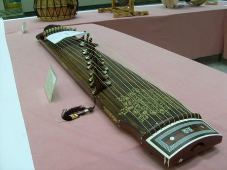
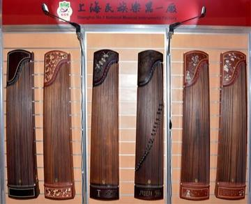
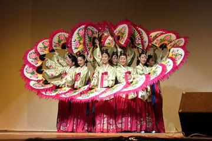

Home / Classical Worlds / Japan and Korea
Playable heritage gameGayageum
Also known as 가야금 · twelve-string zither
The gayageum is a Korean long zither with twelve silk strings, each lifted on its own movable bridge. The player plucks with the right hand and presses, bends and shakes the string with the left, giving the swaying, voice-like tone of Korean court and folk music.

How to play
- Twelve strings run from low on the left to high on the right; each string is one lane.
- Notes slide down a string. Pluck the string as the note reaches the bridge end.
- Count the long cycles in twelve beats, felt as four groups of three.
- Listen for the rests: in this music the silence between notes is part of the phrase.
Rules at a glance
- The twelve strings are tuned to a five-note scale: D, F, G, A and C, over several octaves.
- Each tune is a cycle of twelve beats, counted as four groups of three.
- A stroke exactly on the beat scores as perfect, a near stroke as good, and a stray stroke costs points.
- Each tune is played through twice.
About the tradition
The gayageum has been played in Korea for some fifteen centuries and stands at the centre of Korean string music. Its silk strings carry slow, bending phrases and, in the folk tradition, quick rolling runs.
Origins
Usually placed in the era of Classical Worlds (about 1000 BCE to 500 CE), although its exact origins are uncertain, within the cultural world of Japan and Korea.
Credits
- Photo: Visviva, Public domain, source on Wikimedia Commons
- Text: CC BY-SA 4.0, World Heritage Games.
Sources

Get the app
Gayageum is one of 9 zithers and harps in the Zithers & Harps of the World app for Android. Live on Google Play. One app, many traditions, no account needed.
More games to play




Erhu Two-String Fiddle
China · Musical instrumentsPlay preview · in the Lutes & Fiddles of the World app
More from South Korea


Bojagi
South Korea · Crafts and making

Dalgona
South Korea · Dexterity and skill games
Dougong Bracket Stacking
China +2 · Puzzles and mind games